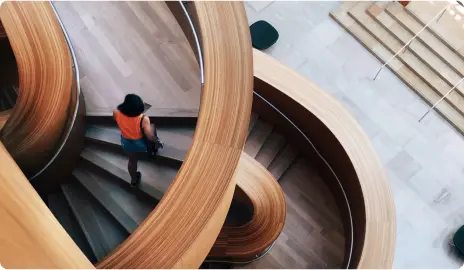

The Art Gallery
This transformative project seeks to enhance the gallery's infrastructure, accessibility, and exhibition spaces while preserving its rich cultural heritage.
The revitalized art gallery is set to redefine cultural landscape.
With meticulous attention to detail and a commitment to excellence, we create spaces that inspire, elevate, and enrich the lives of those who inhabit them.
The revitalized Art Gallery is set to redefine the cultural landscape of Toronto, serving as a nexus of artistic expression, community engagement, and architectural marvel. The expansion and renovation project pay homage to the Art Gallery's rich history while embracing the future, ensuring that the gallery remains a beacon of inspiration.
The revitalized Art Gallery is set to redefine the cultural landscape of Toronto, serving as a nexus of artistic expression, community engagement, and architectural marvel. The expansion and renovation project pay homage to the Art Gallery's rich history while embracing the future, ensuring that the gallery remains a beacon of inspiration.
Études is not confined to the past—we are passionate about the cutting edge designs shaping our world today.
1. Through Études, we aspire to redefine architectural boundaries and usher in a new era of design excellence that leaves an indelible mark on the built environment.
Our comprehensive suite of professional services caters to a diverse clientele, ranging from homeowners to commercial developers. With a commitment to innovation and sustainability, Études is the bridge that transforms architectural dreams into remarkable built realities.
2. Case studies that celebrate the artistry can fuel curiosity and ignite inspiration.